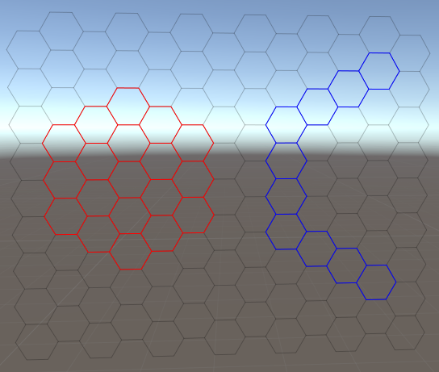

First major step towards 2.0
Modified:
Category: progress
I have now finished the first major task towards version 2.0: extracting the renderers into their own class. Until now the task of rendering the grid was part of the grid class, this made the classes much larger and it was impossible to add one's own rendering shapes without modifying the grids themselves.
The new approach is much cleaner and more in the spirit of object-oriented
programming: The grid itself does not render anything at all. It provides a
public interface that has all the information needed for another object to
compute all the points necessary. This second object is the renderer, it's
another Component attached to a GameObject. In order to create a new custom
shape you would just have to write a new renderer class and use the same public
interface I used as well. This means you get to use exactly the same API I was
using as well, no hacking around in the source or using undocumented API.
I was glad to find that the public API provided in version 1.x is all I needed
to rewrite all existing renderers. This means that if you already know Grid
Framework there is nothing new to learn. There are still some questions open
about how exactly to handle renderers; currently all renderers are components,
that's a very simple approach but it has one nasty limitation: you cannot have
more than one renderer of every type attached to the same GameObject.
Let's say you have two wizards and you want to visualise the area of effect for
their spells. It would make sense to use two different renderers of the same
type on the same grid, one for each wizard. However, since you cannot have
more than one renderer per grid you would have to make a duplicate of the grid
GameObject. One solution would be to drop the Component idea and make
renderers just regular classes, but then we lose the ability to set properties
in the inspector, and that is unacceptable.
The best idea I have so far is to strike a balance between those two concepts:
there will be a container type for renderers that can contain any amount of
renderers. The container will be a Component with a very small inspector
interface that contains a sort of foldout for every renderer. The renderers
define their own inspector interface which is then rendered as part of the
container's interface.
The downside to this is that the renderers are now concerned with two tasks: rendering the grid and their inspector interface. It's small price to pay, but still. Maybe I will be able to come up with something better in the meantime.
Update
Well, this has been a waste of time: turns out that you can have more than one
component of the same type per GameObject. I think that's the way to go then.
Here is a screenshot of it: there is one underlying main grid which uses a
rectangular shape and two cone grids. Every renderer has its own setting like
colour, position and so on.

One wizard is about to cast the fireball spell while another is about to cast an ice-wall spell.